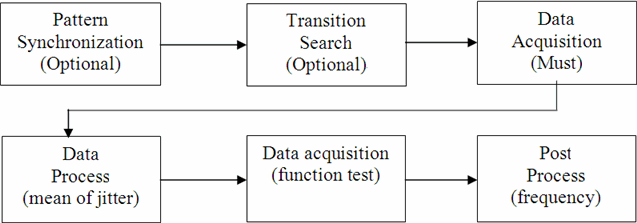

JitterStardust
This test method measures the jitter on the output of a device. As a result, the jitter frequency and spectrum will be printed in the report window and logged to the data log stream if needed.
Generally, this test method performs jitter test via shifting the value of a spec variable. When the spec value is shifted, a functional test will be executed and the error count data is retrieved. Jitter stardust is calculated through analyzing the error count data.
Multisite test and multiport test are supported in this test method. Only PinScale test systems are supported by the test method.
Six major steps are involved in this JitterStardust test method. The execution flow is shown in the figure below.

Pattern synchronization tries to find the compare edge position where the pattern passes. Transition search finds the bit transition position (the pass-to-fail or fail-to-pass position) needed in data acquisition. The first data acquisition captures the error count data during the bit transition area. Data process calculates the mean of jitter from the error count data. The second data acquisition executes a functional test and outputs a sequence of pass/fail data. Post process calculates the spectrum and frequency of the jitter from the pass/fail sequence.
The first two steps are optional and can be skipped by setting the corresponding parameters. The last four steps are mandatory for jitter stardust measurement.
Pattern synchronization (AutoSync)
Pattern synchronization can enabled by setting the parameter autoSync to ON. A linear search is executed in the range defined by the parameter start and stop. The search resolution is defined by the parameter autoSync.stepWidth . A timing spec variable pinName_specName_postfix is used in the spec search.
To avoid a marginal pass pattern, the second linear search will be done to the pass pattern. The synchronization position will be the mean value of the passing area.
The figure below shows the execution sequence of the AutoSync.

The selection of the parameter autoSync.stepWidth is important and should carefully be done to achieve fast test times and a reliable synchronization results. The parameter autoSync.stepWidth should neither exceed the minimum eye opening of the data pattern, nor fall significantly below the minimum eye opening value. It is recommended to have one passing strobe position within the minimum expected eye opening.
If the parameter autoSync is set to ON,
the timing specification variable will be reset to its original value at the end of the
measurement. If the parameter autoSync is set to
ON_KEEP_VALUE, the timing spec specification variable will keep the
value of the synchronization position. If the pattern is already synchronized (passing
functional test), do not execute the AutoSync routine and set the
AutoSync parameter to
OFF.
AutoSync will also find a synchronization
position for a failing pattern if the parameter passOnMaxErrorCount is set to a
positive number. If the error count of a strobe position is less than
passOnMaxErrorCount, the position will be considered as a
pass. This is useful for measurements where the pattern is not finally debugged
and just a few "fails" are remaining.
If AutoSync is executed and no pass
position is found, the execution of jitterStardust test method will be stopped.
Transition search
For accurate jitter measurements, the data acquisition should use a fine resolution which might lead to longer test time. The tradeoff between accuracy and test time raises the need for an optimization of the exact acquisition area. Areas with a stable error count (for example, the eye opening) do not contribute to the measurement accuracy and should be avoided.
Therefore the first data acquisition should start at the first position where the error count starts to increase/decrease.
This transition search routine
finds the bit transition position (the pass-to-fail or fail-to-pass position) needed in data
acquisition. It can be enabled by setting the parameter transitionSearch to
ON. The transition search algorithm requires a passing (the error count
< passOnMaxErrorCount) pattern. The start point of the transition search
is the passing synchronization position that was either achieved by previous tests or by the
AutoSync routine. From this start point, a binary search with the range
defined by 1.5 * UI_width and the direction defined by the parameter
transitionSearch.transition will be performed.
The figure below shows the transition search process.

Data acquisition
Data acquisition captures the error count data during
the bit transition area. The captured error count data is used to calculate the jitter
histogram. During the data acquisition, the compare strobe will linearly be moved through a
defined area of the data eye and the error count will be captured on all measurement pins in
parallel. The step size is defined by the parameter
dataAcqu.stepWidth. This parameter determines the accuracy
of the measurement and the execution time.
In the following figure, the data acquisition procedure is illustrated. The acquisition is always from the bottom of lowest error count area to left side or to right side.

If no AutoSync or transition search is done before this
acquisition, the data acquisition executes in the range defined by the parameter start to the
parameter stop. You need to choose proper values for these two parameters for left and right
side transition.
If the AutoSync results or transition search results are used as the acquisition start point, the test method checks for a steady error count as stop criteria (optimized data acquisition stop).
There are eight cases for the range of data acquisition. The table below shows the details.
Case No. |
AutoSync |
Transition Search |
Data Acquisition |
start time |
stop time |
|
|---|---|---|---|---|---|---|
Mode |
Result |
Mode |
Result |
|||
1 |
OFF |
|
OFF |
|
Parameter start |
Parameter stop |
2 |
OFF |
|
ON |
Pass |
pass/fail transition of Transition Search |
Optimized data acquisition stop |
3 |
OFF |
|
ON |
Fail |
- Measurement stops |
- |
4 |
ON |
Pass |
OFF |
|
autoSync position |
Optimized data acquisition stop |
5 |
ON |
Fail |
OFF |
|
- Measurement stops |
- |
6 |
ON |
Pass |
ON |
Fail |
- Measurement stops |
- |
7 |
ON |
Pass |
ON |
Pass |
pass/fail transition of Transition Search |
Optimized Data Acquisition stop |
8 |
ON |
Fail |
ON |
|
- Measurement stops |
- |
Data process
Based on the error count from the previous data acquisition, jitter histogram and relevant values are calculated.
Data acquisition (functional test)
The center of the signal transition corresponds to the mean value of the histogram over the signal transition. Thus, the compare strobe will be placed at the mean value and one functional test will be executed using the Global Sequencer in the Edge Oriented mode. The error map recording start is controlled by the parameter errorMapStartCycle. The number of captured cycles is defined by the parameter acquisitionDepth. The maximum cycle length that can be captured is limited by the size of the error map. For data recording, either the error map of each test processor (8k) or the unused vector memory of each pin (RAM) can be used.
After the functional test, the detail error map will be evaluated. The final output of the data acquisition is a pass/fail sequence (error density signal) where 1 stands for pass and -1 for fail.
Post process
The power density spectrum and frequency is calculated from the pass/fail sequence of last data acquisition and displayed in the UI report window or signal analyzer according to the setting of the parameter output.mode.
This test method supports test table. But you need to enter the test names manually in the parameter. You can use both test table and testflow limits in a testflow. The test table has higher priority than testflow limits. If a test name used in the test flow is defined in both test table and testflow limits, the value defined in the test table will be used.
Parameter |
Type |
Description |
|---|---|---|
pinList |
PinString |
The list of the pin or pin groups that the spec is shifted for. The member of pin list needs to be O or IO digital pins or pin groups, which are delimited by commas. For differential pins, you only need to input the positive pins. |
portName |
string |
(optional) Port name the pinList belongs to. Default value is @. Only pins belonging to one port can be measured together. |
specName_postfix |
string |
The postfix used to define the spec variables. A spec variable corresponding to each test pin must be defined to be used for jitter measurement. For example, if Tx0 is the pin to be measured, the spec variable to use is Tx0_offset. Then this parameter needs to be set as "offset". |
UI_width |
SpecValue |
The time interval of a bit in the test pattern. It is in the format of value[unit]. Default value is 0[ns]. |
start |
SpecValue |
If autoSync is ON or ON_KEEP_VALUE, this is the linear search start point in pattern synchronization. If both autoSync and transitionSearch are OFF, this parameter is the data acquisition start point. If autoSync is OFF and transitionSearch is ON, this parameter is the transition search start point. It is in the format of value[unit]. Default value is 0[ns]. |
stop |
SpecValue |
If autoSync is ON or ON_KEEP_VALUE, this is the linear search stop point in pattern synchronization. If both autoSync and transitionSearch are OFF, this parameter is the data acquisition stop point. If autoSync is OFF and transitionSearch is ON, this parameter is the transition search stop point. It is in the format of value[unit]. Default value is 0[ns]. |
dataAcquStepWidth |
SpecValue |
Step width of data acquisition. It is in the format of value[unit]. Default value is 0[ns]. |
passOnMaxErrorCount |
int |
The maximum edge error count specified as the pass/fail threshold. Default value is 0. |
autoSync |
int |
This is used to enable/disable the autoSync step. There are three options: OFF: The pattern synchronization is disabled. ON: The pattern synchronization is enabled. The spec variable is reset to the original value after finishing the test. ON_KEEP_VALUE: The pattern synchronization is enabled and a specification variable value will be kept for the next test suite. |
autoSync.stepWidth |
SpecValue |
Step width of linear search pattern synchronization. It is in the format of value[unit]. Default value is 0[ns].. |
transitionSearch |
int |
Enables or disables the transition search. The optional values are ON and OFF. |
transitionSearch.transition |
int |
For transition search, it determines which side of bit transition will be searched. For data acquisition, it determines the error count data of which side will be acquired for jitter histogram calculation. There are three options: LEFT, RIGHT, BOTH. Default value is LEFT. |
errorMapStartCycle |
int |
The start cycle within the test pattern where the data acquisition with error map starts. |
acquisitionDepth |
int |
The number of samples that will be acquired by error map. The maximum number depends on whether the test processor error map memory or the error map in the vector memory is used. The number of compare edges is counted. |
FFTWindow |
string |
The windowing used for FFT. It can be Uniform, Hanning, Hamming or Blackman. The default value is Uniform. |
output.mode
|
string |
This parameter is in effect only if output is set to ReportUI. There are three options: SUMMARY: a result table will be printed in the report window. DETAIL: an ASCII plot of the Error Count and the jitter stardust will be printed in report window additionally. ANALYSIS: the jitter stardust data will be transfer to signal analyzer tool for display and debugging. Default value is SUMMARY. |
output |
string |
Print message or not. ReportUI - for debug mode None - for production mode Default is ReportUI. |
testName |
string |
The test names to be used as limits. Default is frequency_MHz. If you want to use the test names defined in the test table or testflow limits, type in the test names manually. Make sure the test names are in the Test name column of the test table (Refer to Structure of a TMLimits CSV file) or in the Test Name column of Tests page of Flow Data Editor. |
frequency_MHz |
The pass range of the measured frequency |
Implementation pseudo code
IF not already connected THEN
connect DUT
ENDIF
clear sequencer status
IF autoSync on THEN
do a linear search to find synchronization position of pattern
IF no pass position found THEN
stop the measurement
ENDIF
ELSEIF autoSync on keep value THEN
do a linear search to find synchronization position of pattern
IF no pass position found THEN
stop the measurement
ENDIF
ENDIF
IF transition search on THEN
IF left side on THEN
find fine transition position on left side
ENDIF
IF right side on THEN
find fine transition position on right side
ENDIF
ENDIF
IF transition area already found THEN
capture error count data in transition area
ELSE
capture error count data in specified area
ENDIF
calculate jitter histogram and find signal transition center
set the compare strobe to the transition center
execute an error map test
retrieve pass/fail sequence of test result
calculate jitter startdust from pass/fail sequence data
IF synchronization on keep value THEN
apply spec value of synchronization position for next test suite
ENDIF
datalog test resultsFunctional changes
- Introduced in SmarTest 6.5.3
- SmarTest 7.0.3: New parameter testName.
- SmarTest 7.0.3: Test table is supported.
- SmarTest 7.1.1: Mixed usage of test table and testflow limits in one testflow is supported in TML 2.1.1.